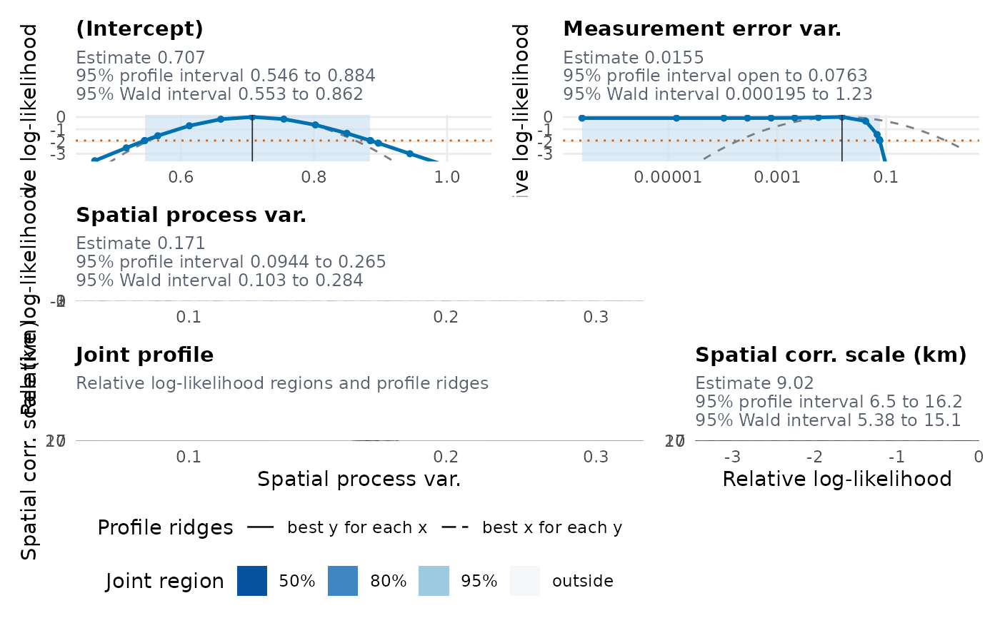
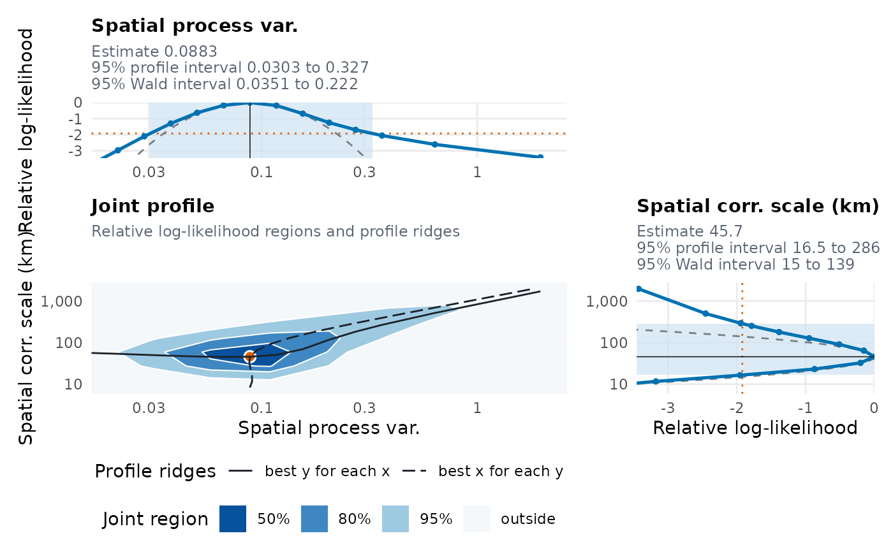

Profile likelihood of a fitted geostatistical model
Source:R/profile_likelihood.R
profile.RiskMap.RdComputes profile likelihoods of a model fitted by glgpm(): for each
chosen parameter, the log-likelihood maximised over all the other
parameters on a grid of values, and for each chosen pair, the same over a
grid of pairs. Profiles are available for linear geostatistical
(Gaussian) models and for binomial, Poisson and negative binomial models fitted with
certified Monte Carlo maximum likelihood. For a binomial, Poisson or negative binomial model
the Monte Carlo likelihood is evaluated on one fixed bank of n_draws
standard normal draws with the importance distribution anchored at the
estimate, so the profiles are smooth functions of the parameters. Use
plot.RiskMap_profile() to draw them.
Arguments
- fitted
A
RiskMapobject fromglgpm()for a Gaussian model, or for a binomial, Poisson or negative binomial model fitted with certified Monte Carlo maximum likelihood.- parameters
Names of the parameters to profile one at a time, as in
names(unlist(fitted$estimate))(the prefixbeta.can be left out). For a Gaussian model the nugget istau2, its variance, in place ofnu2, its ratio to the spatial variance. The default is every parameter.- pairs
A list of pairs of parameter names for joint profiles, for example
list(c("sigma2", "phi")). The default is none.- n_points
Number of points of each marginal grid before any extension, and the most points on each side of the estimate.
- n_grid
Number of points along each side of a joint grid.
- span
Half-width of the grids, in standard errors.
- n_draws
Number of Monte Carlo draws in the bank. Not used for a Gaussian model.
- seed
Seed of the bank. The random number state of the session is restored afterwards. Not used for a Gaussian model.
- level
Confidence level of the reported profile intervals.
- cores
Number of processes. With more than one, the two sides of each marginal profile, the ends of the intervals and the joint profiles run in parallel by forking, which is not available on Windows. When the RhpcBLASctl package is installed, each process uses one BLAS and OpenMP thread, and the results are the same as on one core with one BLAS thread. With several BLAS threads on one core they agree up to rounding.
- messages
Logical, whether to report on the profiles, with a progress bar as described in riskmap_progress. Defaults to the option
RiskMap.messages, orTRUEif it is not set.- ...
Not used.
Value
An object of class RiskMap_profile: a list with the marginal
profiles (marginal), the joint profiles (joint), the intervals
(intervals), the estimate and the maximum of the log-likelihood on the
bank, or of the exact likelihood (estimate, max_loglik), and the
settings.
Details
The likelihood of a Gaussian model is exact, so there is no bank of draws
and n_draws and seed are not used. For each value of the covariance
parameters the regression coefficients that maximise the likelihood are
found by generalised least squares, so each point is a maximisation over
the covariance parameters only. The parameters are those of
summary(), with its labels: the regression coefficients, the spatial
variance and scale, the variance of the nugget (tau2) when it is
estimated, the measurement error variance (sigma2_me) unless it is
fixed by fix_var_me, and the variances of the random effects. Since
points of an exact likelihood are cheap, each end of a profile interval
is refined until the deviance of a solved point is within 0.01 of the
cut-off. Grid steps of the variances and the scale are at most 1 on the
logarithmic scale, so that a variance estimated near zero, whose standard
error is huge, is still profiled, and each point of a joint profile is
solved from its neighbour's solution and from the estimate. A profile
that stays below the cut-off down to the lower bound of a variance (about
\(e^{-20}\)) shows that the data cannot tell that variance from zero,
and its interval is open there.
The smoothness \(\kappa\) of the Matern correlation stays fixed at the
value used in the fit. It can be profiled by refitting the model over a
set of values of \(\kappa\) and comparing the maximised
log-likelihoods (log_lik) of the fits.
Grids are centred at the estimate on the scale on which the model is fitted
(the logarithm for variances and the scale) and span span standard errors
either way. If the profile deviance has not passed the 99% point of a
chi-squared distribution on one degree of freedom by the end of a marginal
grid, the grid is extended with steps that double each time, up to
n_points points on each side. Each point starts the optimisation from
the extrapolation of the two previous solutions, which follows a ridge in
the other parameters. The optimisation works on the scale of the fit, with
standardised covariates, while a profiled coefficient stays fixed in its
own units. Profiles can have more than one constrained
maximum in sparse data, so a point whose deviance is beyond the interval is
also solved from the estimate, and the higher solution is kept.
Profile intervals are where the profile deviance, twice the drop in the
log-likelihood from its maximum, crosses the chi-squared quantile for the
requested level. The crossing is interpolated linearly in the signed root
of the deviance, which is close to linear in the parameter, after one more
point is solved at the interpolated crossing when the two points around it
are far apart. An end that the profile does not reach within the grid or
the bounds of the parameter is reported as open (NA). If a point on a
profile is higher than the estimate, the estimate is not the highest
maximum found, and a message says so.
Each point is a maximisation of the likelihood over the other
parameters, so the time grows with the number of points and of parameters.
A binomial, Poisson or negative binomial model that takes a minute to fit can take tens of
seconds per point.
Joint profiles cost n_grid^2 points each and are computed only when
pairs asks for them. With messages = TRUE a progress bar shows the
time left (see riskmap_progress). cores runs independent parts in
parallel.
Examples
# \donttest{
data(galicia)
fit <- glgpm(log(lead) ~ gp(kappa = 1.5), data = galicia,
family = "gaussian", distance_units = "km", messages = FALSE)
profiles <- profile(fit, pairs = list(c("sigma2", "phi")))
#> ℹ Profiling 4 parameters and 1 pair.
profiles
#> ── Profile likelihood ──────────────────────────────────────────────────────────
#> The likelihood is exact. The intervals are 95% intervals, with the variances
#> and the scale on their natural scale.
#>
#> Profile interval Wald interval
#> Parameter Estimate Lower Upper Lower Upper
#> (Intercept) 0.7074 0.546 0.8845 0.5528 0.8621
#> Spatial process var. 0.1713 0.09442 0.2649 0.1033 0.2839
#> Spatial corr. scale (km) 9.021 6.502 16.23 5.384 15.11
#> Measurement error var. 0.01546 NA 0.07629 0.0001947 1.228
#>
#> ℹ NA means that the profile does not reach the cut-off on that side within the
#> grid or the bounds of the parameter, so the interval is open there.
plot(profiles)

data(liberia)
liberia <- sf::st_as_sf(liberia, coords = c("long", "lat"), crs = 4326)
fit <- glgpm(npos ~ log(elevation) + gp(), denominator = ntest,
data = liberia, model_crs = 32629, family = "binomial",
seed = 2026)
#> ℹ The model is fitted in EPSG:32629, with distances in km.
#> ✔ Certified. The Monte Carlo error of the estimate is within 0.0091 statistical
#> standard errors (an approximate 95% bound, tolerance 0.1).
profiles <- profile(fit, parameters = c("sigma2", "phi"),
pairs = list(c("sigma2", "phi")), n_grid = 9,
n_draws = 2000)
#> ℹ Re-maximising the likelihood on a bank of 2000 draws.
#> ℹ Profiling 2 parameters and 1 pair.
profiles
#> ── Profile likelihood ──────────────────────────────────────────────────────────
#> The likelihood is approximated with 2,000 Monte Carlo draws. The intervals are
#> 95% intervals, with the variances and the scale on their natural scale.
#>
#> Profile interval Wald interval
#> Parameter Estimate Lower Upper Lower Upper
#> Spatial process var. 0.08825 0.03027 0.3271 0.03512 0.2218
#> Spatial corr. scale (km) 45.67 16.53 285.7 14.96 139.4
plot(profiles)

# }